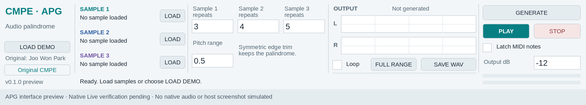
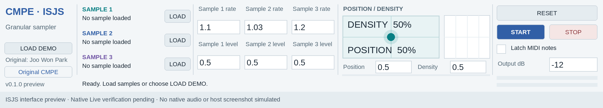
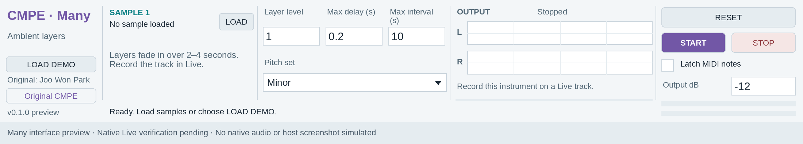
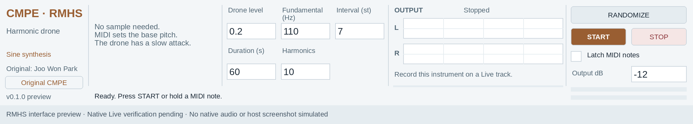
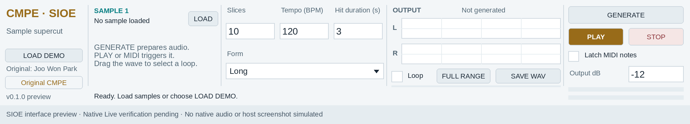

01 · KEEP THE FOLDER
Extract the ZIP
Keep the five .amxd files, JavaScript, voice patches, and WAVs together. Move the whole folder somewhere permanent before saving a Live Set.
Audio palindromes, granular textures, ambient layers, harmonic drones, and supercuts. Adapted from Joo Won Park's Computer Music Practice Examples.
Preview release. The device files and controller have automated checks. Opening, playback, and saved-Set recall still need verification in Ableton Live. These devices are supplied with their dependencies in this folder.
Keep the five .amxd files, JavaScript, voice patches, and WAVs together. Move the whole folder somewhere permanent before saving a Live Set.
Drag an .amxd file onto an empty MIDI track. You need Live with Max for Live enabled. Select your audio interface in Live's Audio settings.
Open CMPE_RMHS.amxd and press START. It needs no samples. Allow its 3–20 second fade-in. Use STOP to finish.
LOAD DEMO → GENERATE → wait for Ready → PLAY
Generation prepares the audio. Playback and MIDI notes trigger the prepared result. Notes sent during generation are ignored; trigger again after Ready. Drag the waveform to choose a loop, then enable Loop. SAVE WAV keeps the complete generated result.
These images show the generated device layouts. They are interface previews, not screenshots captured in Ableton Live. Waveforms and scopes are empty before audio is generated or played.
Three samples become a mirrored audio palindrome.

Three granular sample streams, with position and density control.

A sample unfolds into overlapping ambient layers.

Slow harmonic drones. No samples required.

A sample becomes a short or gradual supercut.

Arm your MIDI track or choose the appropriate monitoring mode to receive notes. With MIDI latch off, hold the note for the performance. With latch on, the sound continues after release; STOP ends it. RMHS follows note pitch. Velocity controls the output level.
Save your Live Set to retain device settings and source references. APG and SIOE can rebuild a saved result from its seed and the same source audio, showing progress during restoration. Keep your custom samples in a stable location. They are referenced, not embedded. SAVE WAV preserves a finite result independently of the sources.
For live ISJS, Many, and RMHS performances, record the track output in real time. Their original free-running timing is retained. Live tempo synchronization, offline export, and Freeze Track behavior are not verified in this preview.
Look at the status line. APG and SIOE must finish generating. ISJS and Many need samples. Many fades in over 2–4 seconds; RMHS can take 3–20 seconds. A short MIDI note may end before a slow attack becomes audible. Try manual START or MIDI latch.
Check the device and track are enabled, the output is routed correctly, and Live's audio engine is running. If the Max Console reports a missing file, restore the full extracted folder.
Complete operating guide · Automated verification · Native Live checks